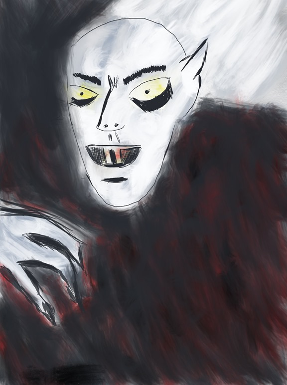

Wild Boars Really Vampire Pigs?

Mt: Why don't they call wild boars vampire pigs?
Ft: Yeah that's what they are. They have long fangs just like a vampire.
Related posts

Choking Hazard: The Real Reason Garlic Repels Vampires
Garlic makes the heart beat twice as strong. When a vampire bites into the throat of a garlic eater, the…
Corporate Vampires
Which one is the cutest?
The Power of a Greeting: How the Saying 'Good Day, Sir' Protected a Village from Vampires in 1575
Once upon a time, in the year 1575, in a small village in Eastern Europe, there lived a man named…

Optical Illusion - Girls Gone Wild
If you look at this picture quick doesn’t it look like the girl is pulling up her shirt? If you…